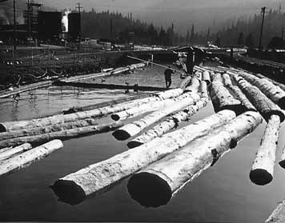

Chapter 25 - Eureka Pond Monkey
"Whistling girls and crowing hens shall always come to some bad end." That is what the old rural American proverb says, and likewise with beat up, wore out lumberjacks. The "bad end" we come to is the next-to-the-last stop in the lumber industry, namely, pond monkey at a sawmill. As a general rule the last stop is night watchman. Of course a quite a few young backs are pond monkeys too.
You wake up in the morning, "not to the Mocking Bird's Trill," but to the sound of the garbage truck coming down the ally, right under your window. There's a big bump right where they turn off the street and into the ally, and that serves as our alarm clock. He hits that bump every morning regularly with a bang! and a crash!, and a jangle of sounds not unlike the sounds not unlike the sounds of a lot of beer cans and bottles being thrown into the air and coming down into the metal bottom of the truck, 'cause that's what it is.
 The Mrs. says, "My God Dad, what in the world is going on out there?" You roll over, yawn, and cast a sleepy eye at the alarm clock and say, "it's six forty five, so it must be that damn truck again after garbage."
So you go over to the window, yank it up and holler, "all right, you guys. How would it be if you would cut down on all that damn noise just a bit?"
One of 'em hollers back, "what's the matter, Pop, you have a hard night?"
So I hollers back, "Of course I had a hard night, every night is a hard night because I work nights!"
One of 'em says to his buddy, "You hear that Joe? He says every night is a hard night.", and Joe says,
"Goddlemighty Pop, a man your age oughta slow down a little."
That tickles the wife and she says, "Remember your ulcers dad, and don't blow a gasket, and adds: you better turn on the radio as it's time for Hemenha and the news."
"Well, that's a good idea too, " I says, "as it may not pay to get up even." So I flip on the radio and sure enough there is old Hemanha,
"And when I say cocoa, I mean Loco, and now the news. State Secretary Dulles is flying to Rangoon today to conclude a pact with the Siamese twins, as some one found a copy of `Das Capital' in the palace library. Sources in Hong Kong predict an early end to the Chinese Red Regime. Unrest is increasing in Russia as the regime calls for a reorganization of Russian industry which sources in Washington say, `can only mean that Russian industry is failing."
The Mrs. says, "turn that durn thing off, as that's all we hear for the last forty years, and besides you got to go to the market and get something for your dinner and lunch." Now that I'm up I might just as well do that, so I go over to the store, lay out five or six bucks for groceries, put them in my pocket, and go get the mail and the paper. Not too much in the way of mail, and the usual line of bullwash in the paper.
Back up in the room and I've had dinner, the Mrs. has my lunch put up, and now to work. On leaving she asks me, "Dad, have you got your lunch, gloves, tobacco, papers, matches, rain suit, cork shoes, watch, and your ulcer pills?"
"Well, there's my ride and got everything, so I'm on my way. Well there's my ride and right on time. Hi Pete, hi Heck. What's the good word?
"Where do you hurt the most today you old reperbate? And what kinda logs we get tonight do you suppose?"
"Well," I says, "What kind do we always have on nights what with the day shift picking the big ones? Pecker poles, that's what kind. And do you know something else? I'm getting damn tired of running around like a striped assed Ape on a pond full of pecker poles for a lousy $2.20 per hour (1958) and risking my life every night."
Well, there's the mill, and look at that pond. Clear full of pecker poles, and even piled up at the landing. Boy oh boy, I've sure got my work laid out for tonight! Well, first things first, so go over to the boom shack get into your cork shoes, punch the time clock, and get a cup of hot java from that new fangled coffee machine. You put in a dime, you hear the works working, the paper cup gets stuck sideways, and here comes the sugar, coffee, and cream-going down the drain. Try 'er again and this time she works. Grease monkey standing there says, "hurry up and grab it Pop 'fore she sucks it back up."
And, there goes the whistle. Now to go out and break that landing jam. Take the old "fool killer" (peavey) go out in the water to the front of the jam, grab the underwater log (first figuring out where you are gonna jump when she breaks) then twist her tail and trust to luck. She hauls all right, and the logs under my feet are a boiling, rolling mass, and logs keep surfacing under my feet, coming up to the top of the water, and a man is hard put to keep afloat!
Next, go over and see that the pond saw man has logs and if not, push in a bunch for him. Then go and shove extra logs in the back storage pond so there's room for the trucks to dump. Next, go over and rake bark into a bark conveyer. Wonder how come they don't have some clay here so a man could make bricks in his spare time? There's a jack pot that drifted away from the landing, so go out and untangle them. Always roll out the underwater log first, (it says here) then watch your step or go swimming with cork shoes, heavy underwear, and a rain suit on.
There is a certain amount of risk involved on any pond monkey job. You can fall in and have logs close in over head, or you can bump your noggin when you fall in, or you can even get a load of logs dumped on you at the landing. You get a high wind at times making it almost impossible to stand up on a log in the water-but you have to manage! Then there are the dark, foggy nights when you can hardly see your feet. Wind is the worst hazard though.
Lots of different work on a pond: Log Dump man, Slip Tender, Pond Saw Man, and Boat Man. Tidewater mills have inside and outside boom men. Time was when we had all big logs, but now it's all pecker poles. Some time it takes two of 'em to hold you up. Finally , the shift is ended, so take off the corks, don the "hen skins" and first thing I know it will be that bang! Crash! of the garbage truck and I will be telling that jerk that I had a hard night and if I was a mite younger, I would go down there and make a few man tracks up and down his spine!